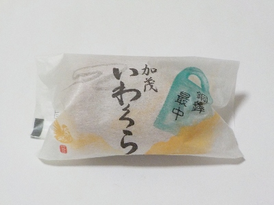
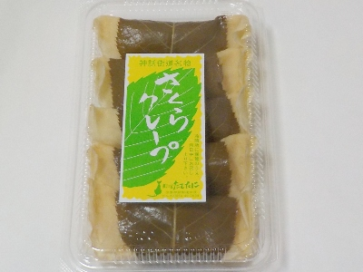

たてたにの加茂いわくら
2025/03/09

餡子と求肥が入った最中です。求肥があるので味がマイルドで食感がしっとりやわらかな感じがしました。
しっとりしている分最中はパリッとしていませんが、美味しい最中でした。
島根県雲南市加茂町東谷88-2
2025/03/09

餡子と求肥が入った最中です。求肥があるので味がマイルドで食感がしっとりやわらかな感じがしました。
しっとりしている分最中はパリッとしていませんが、美味しい最中でした。
2025/03/06

見た目が桜餅です。クレープ生地の中にクリームと餡子が入っていました。桜餅の葉っぱがあるので塩味もします。
いろんな要素があって複雑な味ですが、美味しかったです。それぞれの味が美味しかったからかな。